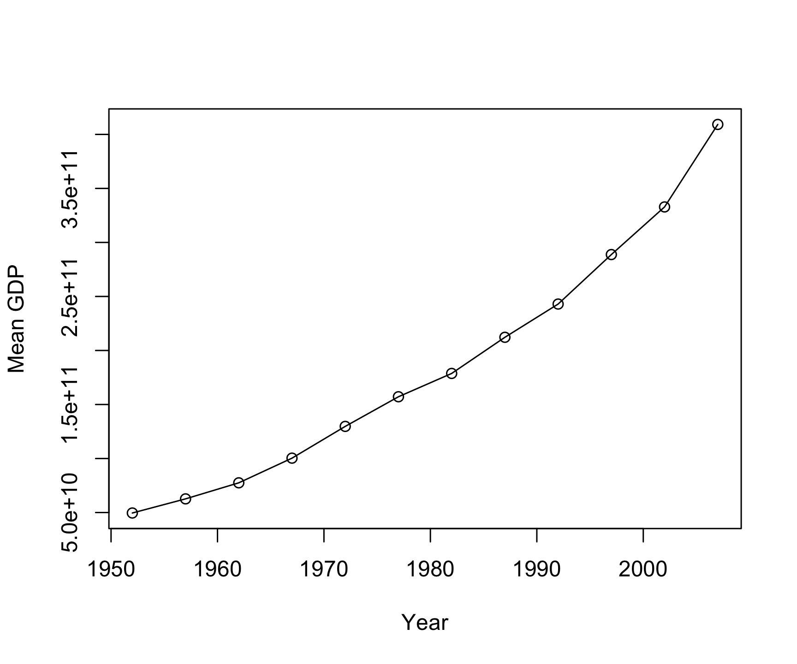
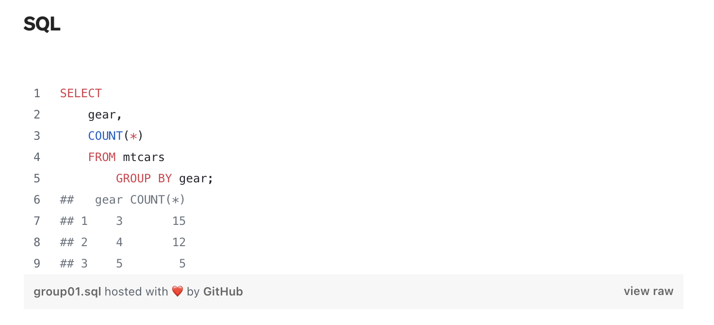

Lecture 06
Data Manipulation
2025-02-11
Subsetting
- R’s subsetting operators are fast and powerful.
- Subsetting in R is easy to learn but hard to master.
- There are 3 subsetting operators,
[[,[, and$. - Subsetting operators interact differently with different vector types (e.g., atomic vectors (matrix, array), lists (data.frames)).
Atomics
[1] 3.4 7.0 18.0 9.6Atomics
Atomics
Atomics
Atomics
Atomics
Atomics
Lists
Lists
Lists
Lists
Lists
Lists
$name
[1] "George" "Stan" "Carly"
$age
[1] 75 15 31
$retired
[1] TRUE FALSE FALSE
[1] "George" "Stan" "Carly"
[1] "George"
[1] "George" "Stan" "Carly"
[1] "George"
[1] "George"data.frames
data.frames
data.frames
data.frames
data.frames
name age retired
1 George 75 TRUE
2 Stan 15 FALSE
3 Carly 31 FALSE
[1] 75
[1] "George" "Stan" "Carly"
[1] 75 15 31A
data.frameis a table-like (two-dimensional array) structure where each column contains values of one variable and each row represents one set of values for a given record.The data stored in a data frame can be of numeric, factor or character type.
Tidy Data: Principle Assumption

Grammar of Data Manipulation
dplyris a package for data manipulationIt is built to be fast, flexible and generic about how your data is stored.
It is installed as part of the
tidyverseand is among those loaded via:
library(tidyverse)
tidyverse::tidyverse_packages()
[1] "broom" "conflicted" "cli" "dbplyr"
[5] "dplyr" "dtplyr" "forcats" "ggplot2"
[9] "googledrive" "googlesheets4" "haven" "hms"
[13] "httr" "jsonlite" "lubridate" "magrittr"
[17] "modelr" "pillar" "purrr" "ragg"
[21] "readr" "readxl" "reprex" "rlang"
[25] "rstudioapi" "rvest" "stringr" "tibble"
[29] "tidyr" "xml2" "tidyverse" 
Grammar of Data Manipulation
According to the package developer,
dplyrprovides a “grammar of data manipulation”Think of this as a consistent set of verbs that help you solve common data manipulation challenges
The idea of data science “grammar(s)” is something we will see through out this class…
Roadmap:
We will cover two “pure” verbs:
select()- picks variables based on their names.
filter()- picks cases based on their values.
and three “manipulation” verbs
mutate()- adds new variables that are functions of existing variables
summarize()- reduces multiple values down to a single summary.
arrange()- changes the ordering of the rows.
These all combine naturally with group_by() which allows you to perform operations “by group”.
Gapminder Data
Gapminder Data
“Gapminder Foundation is a non-profit venture registered in Stockholm, Sweden, that promotes sustainable global development and achievement of the United Nations Millennium Development Goals by increased use and understanding of statistics and other information about social, economic and environmental development at local, national and global levels.”
str(gapminder)
tibble [1,704 × 6] (S3: tbl_df/tbl/data.frame)
$ country : Factor w/ 142 levels "Afghanistan",..: 1 1 1 1 1 1 1 1 1 1 ...
$ continent: Factor w/ 5 levels "Africa","Americas",..: 3 3 3 3 3 3 3 3 3 3 ...
$ year : int [1:1704] 1952 1957 1962 1967 1972 1977 1982 1987 1992 1997 ...
$ lifeExp : num [1:1704] 28.8 30.3 32 34 36.1 ...
$ pop : int [1:1704] 8425333 9240934 10267083 11537966 13079460 14880372 12881816 13867957 16317921 22227415 ...
$ gdpPercap: num [1:1704] 779 821 853 836 740 ...Subsetting rows by conditions
filter()takes logical (binary) expressions and returns the rows in which all conditions are TRUE.filter()does NOT impact columnsthe
data.frameis ALWAYS the fist argumentLets find all rows in
gapminderthat in which the life expectancy is less then 40
filter(gapminder, lifeExp < 40)
# A tibble: 124 × 6
country continent year lifeExp pop gdpPercap
<fct> <fct> <int> <dbl> <int> <dbl>
1 Afghanistan Asia 1952 28.8 8425333 779.
2 Afghanistan Asia 1957 30.3 9240934 821.
3 Afghanistan Asia 1962 32.0 10267083 853.
4 Afghanistan Asia 1967 34.0 11537966 836.
5 Afghanistan Asia 1972 36.1 13079460 740.
6 Afghanistan Asia 1977 38.4 14880372 786.
7 Afghanistan Asia 1982 39.9 12881816 978.
8 Angola Africa 1952 30.0 4232095 3521.
9 Angola Africa 1957 32.0 4561361 3828.
10 Angola Africa 1962 34 4826015 4269.
# ℹ 114 more rowsSubsetting rows by conditions
- Lets find all observations in
gapminderwhere the year is 2007, and the life expectancy is less then 40:
Subsetting rows by conditions
- Lets find all rows in
gapminderthat document Iraq, Iran, and Afghanistan (%in%) and have a year greater then 2005
Base Alternative
Compare with some base R code to accomplish the same things:
No matter how you do things, You should never subset your data like this:
gapminder[19:70, ]
# A tibble: 52 × 6
country continent year lifeExp pop gdpPercap
<fct> <fct> <int> <dbl> <int> <dbl>
1 Albania Europe 1982 70.4 2780097 3631.
2 Albania Europe 1987 72 3075321 3739.
3 Albania Europe 1992 71.6 3326498 2497.
4 Albania Europe 1997 73.0 3428038 3193.
5 Albania Europe 2002 75.7 3508512 4604.
6 Albania Europe 2007 76.4 3600523 5937.
7 Algeria Africa 1952 43.1 9279525 2449.
8 Algeria Africa 1957 45.7 10270856 3014.
9 Algeria Africa 1962 48.3 11000948 2551.
10 Algeria Africa 1967 51.4 12760499 3247.
# ℹ 42 more rowsWhy?
It’s not self-documenting. Why rows 241 through 252?
It’s fragile. This line of code will produce different results if someone changes the raw data
- Say more years are added
- Say another variable is added
Reducing data.frames by variables
Use
select()to subset the variables or columns you want.the
data.frameis ALWAYS the fist argument
Reducing data.frames by variables
select() can also be used to rename existing columns
select(gapminder, country, life_exp = lifeExp)
# A tibble: 1,704 × 2
country life_exp
<fct> <dbl>
1 Afghanistan 28.8
2 Afghanistan 30.3
3 Afghanistan 32.0
4 Afghanistan 34.0
5 Afghanistan 36.1
6 Afghanistan 38.4
7 Afghanistan 39.9
8 Afghanistan 40.8
9 Afghanistan 41.7
10 Afghanistan 41.8
# ℹ 1,694 more rowsReducing data.frames by variables
select() can be used to remove columns. The ! negates a selection
select(gapminder, !country)
# A tibble: 1,704 × 5
continent year lifeExp pop gdpPercap
<fct> <int> <dbl> <int> <dbl>
1 Asia 1952 28.8 8425333 779.
2 Asia 1957 30.3 9240934 821.
3 Asia 1962 32.0 10267083 853.
4 Asia 1967 34.0 11537966 836.
5 Asia 1972 36.1 13079460 740.
6 Asia 1977 38.4 14880372 786.
7 Asia 1982 39.9 12881816 978.
8 Asia 1987 40.8 13867957 852.
9 Asia 1992 41.7 16317921 649.
10 Asia 1997 41.8 22227415 635.
# ℹ 1,694 more rowsRenaming & Reordering with dplyr
gapminder |>
select(country, continent, pop) |>
rename(population = pop) |>
relocate(continent, country, population)
# A tibble: 1,704 × 3
continent country population
<fct> <fct> <int>
1 Asia Afghanistan 8425333
2 Asia Afghanistan 9240934
3 Asia Afghanistan 10267083
4 Asia Afghanistan 11537966
5 Asia Afghanistan 13079460
6 Asia Afghanistan 14880372
7 Asia Afghanistan 12881816
8 Asia Afghanistan 13867957
9 Asia Afghanistan 16317921
10 Asia Afghanistan 22227415
# ℹ 1,694 more rowsThe |> / %>% (pipe) operator(s)
The pipe operator will change your data workflow in R.
This new syntax leads to code that is much easier to write and to read.
Here’s what it looks like: |>.
The RStudio keyboard shortcut: Ctrl+Shift+M (Windows), Cmd+Shift+M (Mac).
The pipe passes the object on the left hand side of the pipe into the first argument of the right hand function:
Example
So this:
…is the same as this:
|> across verbs
# A tibble: 1,704 × 6
country continent year lifeExp pop gdpPercap
<fct> <fct> <int> <dbl> <int> <dbl>
1 Afghanistan Asia 1952 28.8 8425333 779.
2 Afghanistan Asia 1957 30.3 9240934 821.
3 Afghanistan Asia 1962 32.0 10267083 853.
4 Afghanistan Asia 1967 34.0 11537966 836.
5 Afghanistan Asia 1972 36.1 13079460 740.
6 Afghanistan Asia 1977 38.4 14880372 786.
7 Afghanistan Asia 1982 39.9 12881816 978.
8 Afghanistan Asia 1987 40.8 13867957 852.
9 Afghanistan Asia 1992 41.7 16317921 649.
10 Afghanistan Asia 1997 41.8 22227415 635.
# ℹ 1,694 more rows|> across verbs
# A tibble: 1,704 × 4
pop gdpPercap year country
<int> <dbl> <int> <fct>
1 8425333 779. 1952 Afghanistan
2 9240934 821. 1957 Afghanistan
3 10267083 853. 1962 Afghanistan
4 11537966 836. 1967 Afghanistan
5 13079460 740. 1972 Afghanistan
6 14880372 786. 1977 Afghanistan
7 12881816 978. 1982 Afghanistan
8 13867957 852. 1987 Afghanistan
9 16317921 649. 1992 Afghanistan
10 22227415 635. 1997 Afghanistan
# ℹ 1,694 more rows|> across verbs
# A tibble: 30 × 4
pop gdpPercap year country
<int> <dbl> <int> <fct>
1 114313951 6660. 1977 Brazil
2 128962939 7031. 1982 Brazil
3 142938076 7807. 1987 Brazil
4 155975974 6950. 1992 Brazil
5 168546719 7958. 1997 Brazil
6 179914212 8131. 2002 Brazil
7 190010647 9066. 2007 Brazil
8 100825279 9848. 1967 Japan
9 107188273 14779. 1972 Japan
10 113872473 16610. 1977 Japan
# ℹ 20 more rows|> across verbs
# A tibble: 11 × 4
pop gdpPercap year country
<int> <dbl> <int> <fct>
1 168546719 7958. 1997 Brazil
2 179914212 8131. 2002 Brazil
3 190010647 9066. 2007 Brazil
4 125956499 28817. 1997 Japan
5 127065841 28605. 2002 Japan
6 127467972 31656. 2007 Japan
7 102479927 10742. 2002 Mexico
8 108700891 11978. 2007 Mexico
9 272911760 35767. 1997 United States
10 287675526 39097. 2002 United States
11 301139947 42952. 2007 United States|> across verbs
# A tibble: 5 × 4
pop gdpPercap year country
<int> <dbl> <int> <fct>
1 102479927 10742. 2002 Mexico
2 108700891 11978. 2007 Mexico
3 272911760 35767. 1997 United States
4 287675526 39097. 2002 United States
5 301139947 42952. 2007 United StatesUse mutate() to add new variables
mutate()defines and inserts new variables into a existingdata.framemutate()builds new variables sequentially so you can reference earlier ones when defining later ones- In the
gapminderdataset we have a population and gdp per capita variable. Lets calculate the GDP of each county
Mutate
# A tibble: 1,704 × 6
country continent year lifeExp pop gdpPercap
<fct> <fct> <int> <dbl> <int> <dbl>
1 Afghanistan Asia 1952 28.8 8425333 779.
2 Afghanistan Asia 1957 30.3 9240934 821.
3 Afghanistan Asia 1962 32.0 10267083 853.
4 Afghanistan Asia 1967 34.0 11537966 836.
5 Afghanistan Asia 1972 36.1 13079460 740.
6 Afghanistan Asia 1977 38.4 14880372 786.
7 Afghanistan Asia 1982 39.9 12881816 978.
8 Afghanistan Asia 1987 40.8 13867957 852.
9 Afghanistan Asia 1992 41.7 16317921 649.
10 Afghanistan Asia 1997 41.8 22227415 635.
# ℹ 1,694 more rowsMutate
# A tibble: 1,704 × 7
country continent year lifeExp pop gdpPercap gdp
<fct> <fct> <int> <dbl> <int> <dbl> <dbl>
1 Afghanistan Asia 1952 28.8 8425333 779. 6567086330.
2 Afghanistan Asia 1957 30.3 9240934 821. 7585448670.
3 Afghanistan Asia 1962 32.0 10267083 853. 8758855797.
4 Afghanistan Asia 1967 34.0 11537966 836. 9648014150.
5 Afghanistan Asia 1972 36.1 13079460 740. 9678553274.
6 Afghanistan Asia 1977 38.4 14880372 786. 11697659231.
7 Afghanistan Asia 1982 39.9 12881816 978. 12598563401.
8 Afghanistan Asia 1987 40.8 13867957 852. 11820990309.
9 Afghanistan Asia 1992 41.7 16317921 649. 10595901589.
10 Afghanistan Asia 1997 41.8 22227415 635. 14121995875.
# ℹ 1,694 more rowsMutate
# A tibble: 1,704 × 6
country continent year lifeExp pop gdp
<fct> <fct> <int> <dbl> <int> <dbl>
1 Afghanistan Asia 1952 28.8 8425333 6567086330.
2 Afghanistan Asia 1957 30.3 9240934 7585448670.
3 Afghanistan Asia 1962 32.0 10267083 8758855797.
4 Afghanistan Asia 1967 34.0 11537966 9648014150.
5 Afghanistan Asia 1972 36.1 13079460 9678553274.
6 Afghanistan Asia 1977 38.4 14880372 11697659231.
7 Afghanistan Asia 1982 39.9 12881816 12598563401.
8 Afghanistan Asia 1987 40.8 13867957 11820990309.
9 Afghanistan Asia 1992 41.7 16317921 10595901589.
10 Afghanistan Asia 1997 41.8 22227415 14121995875.
# ℹ 1,694 more rowsUse sumarize() to reduce a data.set
summarize()takes a dataset with n observations, computes requested values, and returns a dataset with 1 observation.summarize()can compute summary statistics for one or more columns in adata.frame.- The first argument in
summarize()is the data.frame.
summarize
# A tibble: 1,704 × 6
country continent year lifeExp pop gdpPercap
<fct> <fct> <int> <dbl> <int> <dbl>
1 Afghanistan Asia 1952 28.8 8425333 779.
2 Afghanistan Asia 1957 30.3 9240934 821.
3 Afghanistan Asia 1962 32.0 10267083 853.
4 Afghanistan Asia 1967 34.0 11537966 836.
5 Afghanistan Asia 1972 36.1 13079460 740.
6 Afghanistan Asia 1977 38.4 14880372 786.
7 Afghanistan Asia 1982 39.9 12881816 978.
8 Afghanistan Asia 1987 40.8 13867957 852.
9 Afghanistan Asia 1992 41.7 16317921 649.
10 Afghanistan Asia 1997 41.8 22227415 635.
# ℹ 1,694 more rowssummarize
# A tibble: 1,704 × 7
country continent year lifeExp pop gdpPercap gdp
<fct> <fct> <int> <dbl> <int> <dbl> <dbl>
1 Afghanistan Asia 1952 28.8 8425333 779. 6567086330.
2 Afghanistan Asia 1957 30.3 9240934 821. 7585448670.
3 Afghanistan Asia 1962 32.0 10267083 853. 8758855797.
4 Afghanistan Asia 1967 34.0 11537966 836. 9648014150.
5 Afghanistan Asia 1972 36.1 13079460 740. 9678553274.
6 Afghanistan Asia 1977 38.4 14880372 786. 11697659231.
7 Afghanistan Asia 1982 39.9 12881816 978. 12598563401.
8 Afghanistan Asia 1987 40.8 13867957 852. 11820990309.
9 Afghanistan Asia 1992 41.7 16317921 649. 10595901589.
10 Afghanistan Asia 1997 41.8 22227415 635. 14121995875.
# ℹ 1,694 more rowssummarize
Arrange
- orders the rows of a
data.framerows by the values of selected columns.
Decreasing or Increasing?
# A tibble: 1,704 × 6
country continent year lifeExp pop gdpPercap
<fct> <fct> <int> <dbl> <int> <dbl>
1 Afghanistan Asia 1952 28.8 8425333 779.
2 Afghanistan Asia 1957 30.3 9240934 821.
3 Afghanistan Asia 1962 32.0 10267083 853.
4 Afghanistan Asia 1967 34.0 11537966 836.
5 Afghanistan Asia 1972 36.1 13079460 740.
6 Afghanistan Asia 1977 38.4 14880372 786.
7 Afghanistan Asia 1982 39.9 12881816 978.
8 Afghanistan Asia 1987 40.8 13867957 852.
9 Afghanistan Asia 1992 41.7 16317921 649.
10 Afghanistan Asia 1997 41.8 22227415 635.
# ℹ 1,694 more rowsDecreasing or Increasing?
# A tibble: 142 × 6
country continent year lifeExp pop gdpPercap
<fct> <fct> <int> <dbl> <int> <dbl>
1 Afghanistan Asia 2007 43.8 31889923 975.
2 Albania Europe 2007 76.4 3600523 5937.
3 Algeria Africa 2007 72.3 33333216 6223.
4 Angola Africa 2007 42.7 12420476 4797.
5 Argentina Americas 2007 75.3 40301927 12779.
6 Australia Oceania 2007 81.2 20434176 34435.
7 Austria Europe 2007 79.8 8199783 36126.
8 Bahrain Asia 2007 75.6 708573 29796.
9 Bangladesh Asia 2007 64.1 150448339 1391.
10 Belgium Europe 2007 79.4 10392226 33693.
# ℹ 132 more rowsDecreasing or Increasing?
# A tibble: 142 × 6
country continent year lifeExp pop gdpPercap
<fct> <fct> <int> <dbl> <int> <dbl>
1 Swaziland Africa 2007 39.6 1133066 4513.
2 Mozambique Africa 2007 42.1 19951656 824.
3 Zambia Africa 2007 42.4 11746035 1271.
4 Sierra Leone Africa 2007 42.6 6144562 863.
5 Lesotho Africa 2007 42.6 2012649 1569.
6 Angola Africa 2007 42.7 12420476 4797.
7 Zimbabwe Africa 2007 43.5 12311143 470.
8 Afghanistan Asia 2007 43.8 31889923 975.
9 Central African Republic Africa 2007 44.7 4369038 706.
10 Liberia Africa 2007 45.7 3193942 415.
# ℹ 132 more rowsDecreasing or Increasing?
# A tibble: 142 × 6
country continent year lifeExp pop gdpPercap
<fct> <fct> <int> <dbl> <int> <dbl>
1 Japan Asia 2007 82.6 127467972 31656.
2 Hong Kong, China Asia 2007 82.2 6980412 39725.
3 Iceland Europe 2007 81.8 301931 36181.
4 Switzerland Europe 2007 81.7 7554661 37506.
5 Australia Oceania 2007 81.2 20434176 34435.
6 Spain Europe 2007 80.9 40448191 28821.
7 Sweden Europe 2007 80.9 9031088 33860.
8 Israel Asia 2007 80.7 6426679 25523.
9 France Europe 2007 80.7 61083916 30470.
10 Canada Americas 2007 80.7 33390141 36319.
# ℹ 132 more rowsMulti sort (order matters)
# A tibble: 1,704 × 6
country continent year lifeExp pop gdpPercap
<fct> <fct> <int> <dbl> <int> <dbl>
1 Afghanistan Asia 1952 28.8 8425333 779.
2 Afghanistan Asia 1957 30.3 9240934 821.
3 Afghanistan Asia 1962 32.0 10267083 853.
4 Afghanistan Asia 1967 34.0 11537966 836.
5 Afghanistan Asia 1972 36.1 13079460 740.
6 Afghanistan Asia 1977 38.4 14880372 786.
7 Afghanistan Asia 1982 39.9 12881816 978.
8 Afghanistan Asia 1987 40.8 13867957 852.
9 Afghanistan Asia 1992 41.7 16317921 649.
10 Afghanistan Asia 1997 41.8 22227415 635.
# ℹ 1,694 more rowsMulti sort (order matters)
# A tibble: 1,704 × 3
country year pop
<fct> <int> <int>
1 Afghanistan 1952 8425333
2 Afghanistan 1957 9240934
3 Afghanistan 1962 10267083
4 Afghanistan 1967 11537966
5 Afghanistan 1972 13079460
6 Afghanistan 1977 14880372
7 Afghanistan 1982 12881816
8 Afghanistan 1987 13867957
9 Afghanistan 1992 16317921
10 Afghanistan 1997 22227415
# ℹ 1,694 more rowsMulti sort (order matters)
# A tibble: 1,704 × 3
country year pop
<fct> <int> <int>
1 Afghanistan 1952 8425333
2 Albania 1952 1282697
3 Algeria 1952 9279525
4 Angola 1952 4232095
5 Argentina 1952 17876956
6 Australia 1952 8691212
7 Austria 1952 6927772
8 Bahrain 1952 120447
9 Bangladesh 1952 46886859
10 Belgium 1952 8730405
# ℹ 1,694 more rowsMulti sort (order matters)
# A tibble: 1,704 × 3
country year pop
<fct> <int> <int>
1 Afghanistan 1952 8425333
2 Afghanistan 1957 9240934
3 Afghanistan 1962 10267083
4 Afghanistan 1967 11537966
5 Afghanistan 1972 13079460
6 Afghanistan 1977 14880372
7 Afghanistan 1982 12881816
8 Afghanistan 1987 13867957
9 Afghanistan 1992 16317921
10 Afghanistan 1997 22227415
# ℹ 1,694 more rowsCombining operations
# A tibble: 1,704 × 6
country continent year lifeExp pop gdpPercap
<fct> <fct> <int> <dbl> <int> <dbl>
1 Afghanistan Asia 1952 28.8 8425333 779.
2 Afghanistan Asia 1957 30.3 9240934 821.
3 Afghanistan Asia 1962 32.0 10267083 853.
4 Afghanistan Asia 1967 34.0 11537966 836.
5 Afghanistan Asia 1972 36.1 13079460 740.
6 Afghanistan Asia 1977 38.4 14880372 786.
7 Afghanistan Asia 1982 39.9 12881816 978.
8 Afghanistan Asia 1987 40.8 13867957 852.
9 Afghanistan Asia 1992 41.7 16317921 649.
10 Afghanistan Asia 1997 41.8 22227415 635.
# ℹ 1,694 more rowsCombining operations
# A tibble: 1,704 × 3
year country gdpPercap
<int> <fct> <dbl>
1 1952 Afghanistan 779.
2 1957 Afghanistan 821.
3 1962 Afghanistan 853.
4 1967 Afghanistan 836.
5 1972 Afghanistan 740.
6 1977 Afghanistan 786.
7 1982 Afghanistan 978.
8 1987 Afghanistan 852.
9 1992 Afghanistan 649.
10 1997 Afghanistan 635.
# ℹ 1,694 more rowsCombining operations
# A tibble: 142 × 3
year country gdpPercap
<int> <fct> <dbl>
1 2007 Afghanistan 975.
2 2007 Albania 5937.
3 2007 Algeria 6223.
4 2007 Angola 4797.
5 2007 Argentina 12779.
6 2007 Australia 34435.
7 2007 Austria 36126.
8 2007 Bahrain 29796.
9 2007 Bangladesh 1391.
10 2007 Belgium 33693.
# ℹ 132 more rowsCombining operations
# A tibble: 142 × 3
year country gdpPercap
<int> <fct> <dbl>
1 2007 Norway 49357.
2 2007 Kuwait 47307.
3 2007 Singapore 47143.
4 2007 United States 42952.
5 2007 Ireland 40676.
6 2007 Hong Kong, China 39725.
7 2007 Switzerland 37506.
8 2007 Netherlands 36798.
9 2007 Canada 36319.
10 2007 Iceland 36181.
# ℹ 132 more rowsCombining operations
# A tibble: 142 × 4
year country gdpPercap rank
<int> <fct> <dbl> <int>
1 2007 Norway 49357. 1
2 2007 Kuwait 47307. 2
3 2007 Singapore 47143. 3
4 2007 United States 42952. 4
5 2007 Ireland 40676. 5
6 2007 Hong Kong, China 39725. 6
7 2007 Switzerland 37506. 7
8 2007 Netherlands 36798. 8
9 2007 Canada 36319. 9
10 2007 Iceland 36181. 10
# ℹ 132 more rowsGroup By
Have you ever had questions like:
- “what is the mean wind speed of tropical storm types?”
- “what is the average weight of
starwarscharacters by species?” - “what are COVID case counts by state?”
These are common questions that are important to data science but are incredibly annoying question to answer in base code…
Groups
dplyr offers powerful tools to solve this class of problem:
group_by()adds extra structure to your dataset by grouping informationmutate()andsummarize()honor groupings.
Combined with the verbs like select, filter, and arrange these new tools allow you to solve an extremely diverse set of problems with relative ease.
group_by()/summarize()
# A tibble: 1,704 × 6
country continent year lifeExp pop gdpPercap
<fct> <fct> <int> <dbl> <int> <dbl>
1 Afghanistan Asia 1952 28.8 8425333 779.
2 Afghanistan Asia 1957 30.3 9240934 821.
3 Afghanistan Asia 1962 32.0 10267083 853.
4 Afghanistan Asia 1967 34.0 11537966 836.
5 Afghanistan Asia 1972 36.1 13079460 740.
6 Afghanistan Asia 1977 38.4 14880372 786.
7 Afghanistan Asia 1982 39.9 12881816 978.
8 Afghanistan Asia 1987 40.8 13867957 852.
9 Afghanistan Asia 1992 41.7 16317921 649.
10 Afghanistan Asia 1997 41.8 22227415 635.
# ℹ 1,694 more rowsgroup_by()/summarize()
# A tibble: 1,704 × 7
country continent year lifeExp pop gdpPercap gdp
<fct> <fct> <int> <dbl> <int> <dbl> <dbl>
1 Afghanistan Asia 1952 28.8 8425333 779. 6567086330.
2 Afghanistan Asia 1957 30.3 9240934 821. 7585448670.
3 Afghanistan Asia 1962 32.0 10267083 853. 8758855797.
4 Afghanistan Asia 1967 34.0 11537966 836. 9648014150.
5 Afghanistan Asia 1972 36.1 13079460 740. 9678553274.
6 Afghanistan Asia 1977 38.4 14880372 786. 11697659231.
7 Afghanistan Asia 1982 39.9 12881816 978. 12598563401.
8 Afghanistan Asia 1987 40.8 13867957 852. 11820990309.
9 Afghanistan Asia 1992 41.7 16317921 649. 10595901589.
10 Afghanistan Asia 1997 41.8 22227415 635. 14121995875.
# ℹ 1,694 more rowsgroup_by()/summarize()
# A tibble: 1,704 × 7
# Groups: year [12]
country continent year lifeExp pop gdpPercap gdp
<fct> <fct> <int> <dbl> <int> <dbl> <dbl>
1 Afghanistan Asia 1952 28.8 8425333 779. 6567086330.
2 Afghanistan Asia 1957 30.3 9240934 821. 7585448670.
3 Afghanistan Asia 1962 32.0 10267083 853. 8758855797.
4 Afghanistan Asia 1967 34.0 11537966 836. 9648014150.
5 Afghanistan Asia 1972 36.1 13079460 740. 9678553274.
6 Afghanistan Asia 1977 38.4 14880372 786. 11697659231.
7 Afghanistan Asia 1982 39.9 12881816 978. 12598563401.
8 Afghanistan Asia 1987 40.8 13867957 852. 11820990309.
9 Afghanistan Asia 1992 41.7 16317921 649. 10595901589.
10 Afghanistan Asia 1997 41.8 22227415 635. 14121995875.
# ℹ 1,694 more rowsgroup_by()/summarize()
# A tibble: 12 × 3
year gpd sd
<int> <dbl> <dbl>
1 1952 49561190904. 1.97e11
2 1957 62649777593. 2.34e11
3 1962 77495568413. 2.80e11
4 1967 100338690564. 3.60e11
5 1972 129728407146. 4.37e11
6 1977 157170394501. 5.09e11
7 1982 178746382573. 5.66e11
8 1987 212202795902. 6.99e11
9 1992 242964158844. 8.01e11
10 1997 288775189215. 9.46e11
11 2002 332861503428. 1.09e12
12 2007 409220666999. 1.31e12group_by()/summarize()
# A tibble: 12 × 3
year gpd sd
<int> <dbl> <dbl>
1 1952 49561190904. 1.97e11
2 1957 62649777593. 2.34e11
3 1962 77495568413. 2.80e11
4 1967 100338690564. 3.60e11
5 1972 129728407146. 4.37e11
6 1977 157170394501. 5.09e11
7 1982 178746382573. 5.66e11
8 1987 212202795902. 6.99e11
9 1992 242964158844. 8.01e11
10 1997 288775189215. 9.46e11
11 2002 332861503428. 1.09e12
12 2007 409220666999. 1.31e12
Life Expectancy
# A tibble: 1,704 × 6
country continent year lifeExp pop gdpPercap
<fct> <fct> <int> <dbl> <int> <dbl>
1 Afghanistan Asia 1952 28.8 8425333 779.
2 Afghanistan Asia 1957 30.3 9240934 821.
3 Afghanistan Asia 1962 32.0 10267083 853.
4 Afghanistan Asia 1967 34.0 11537966 836.
5 Afghanistan Asia 1972 36.1 13079460 740.
6 Afghanistan Asia 1977 38.4 14880372 786.
7 Afghanistan Asia 1982 39.9 12881816 978.
8 Afghanistan Asia 1987 40.8 13867957 852.
9 Afghanistan Asia 1992 41.7 16317921 649.
10 Afghanistan Asia 1997 41.8 22227415 635.
# ℹ 1,694 more rowsLife Expectancy
# A tibble: 360 × 6
country continent year lifeExp pop gdpPercap
<fct> <fct> <int> <dbl> <int> <dbl>
1 Albania Europe 1952 55.2 1282697 1601.
2 Albania Europe 1957 59.3 1476505 1942.
3 Albania Europe 1962 64.8 1728137 2313.
4 Albania Europe 1967 66.2 1984060 2760.
5 Albania Europe 1972 67.7 2263554 3313.
6 Albania Europe 1977 68.9 2509048 3533.
7 Albania Europe 1982 70.4 2780097 3631.
8 Albania Europe 1987 72 3075321 3739.
9 Albania Europe 1992 71.6 3326498 2497.
10 Albania Europe 1997 73.0 3428038 3193.
# ℹ 350 more rowsLife Expectancy
# A tibble: 360 × 6
# Groups: year [12]
country continent year lifeExp pop gdpPercap
<fct> <fct> <int> <dbl> <int> <dbl>
1 Albania Europe 1952 55.2 1282697 1601.
2 Albania Europe 1957 59.3 1476505 1942.
3 Albania Europe 1962 64.8 1728137 2313.
4 Albania Europe 1967 66.2 1984060 2760.
5 Albania Europe 1972 67.7 2263554 3313.
6 Albania Europe 1977 68.9 2509048 3533.
7 Albania Europe 1982 70.4 2780097 3631.
8 Albania Europe 1987 72 3075321 3739.
9 Albania Europe 1992 71.6 3326498 2497.
10 Albania Europe 1997 73.0 3428038 3193.
# ℹ 350 more rowsLife Expectancy
# A tibble: 12 × 3
year min_lifeExp max_lifeExp
<int> <dbl> <dbl>
1 1952 43.6 72.7
2 1957 48.1 73.5
3 1962 52.1 73.7
4 1967 54.3 74.2
5 1972 57.0 74.7
6 1977 59.5 76.1
7 1982 61.0 77.0
8 1987 63.1 77.4
9 1992 66.1 78.8
10 1997 68.8 79.4
11 2002 70.8 80.6
12 2007 71.8 81.8Life Expectancy Gain
# A tibble: 1,704 × 6
country continent year lifeExp pop gdpPercap
<fct> <fct> <int> <dbl> <int> <dbl>
1 Afghanistan Asia 1952 28.8 8425333 779.
2 Afghanistan Asia 1957 30.3 9240934 821.
3 Afghanistan Asia 1962 32.0 10267083 853.
4 Afghanistan Asia 1967 34.0 11537966 836.
5 Afghanistan Asia 1972 36.1 13079460 740.
6 Afghanistan Asia 1977 38.4 14880372 786.
7 Afghanistan Asia 1982 39.9 12881816 978.
8 Afghanistan Asia 1987 40.8 13867957 852.
9 Afghanistan Asia 1992 41.7 16317921 649.
10 Afghanistan Asia 1997 41.8 22227415 635.
# ℹ 1,694 more rowsLife Expectancy Gain
# A tibble: 360 × 6
country continent year lifeExp pop gdpPercap
<fct> <fct> <int> <dbl> <int> <dbl>
1 Albania Europe 1952 55.2 1282697 1601.
2 Albania Europe 1957 59.3 1476505 1942.
3 Albania Europe 1962 64.8 1728137 2313.
4 Albania Europe 1967 66.2 1984060 2760.
5 Albania Europe 1972 67.7 2263554 3313.
6 Albania Europe 1977 68.9 2509048 3533.
7 Albania Europe 1982 70.4 2780097 3631.
8 Albania Europe 1987 72 3075321 3739.
9 Albania Europe 1992 71.6 3326498 2497.
10 Albania Europe 1997 73.0 3428038 3193.
# ℹ 350 more rowsLife Expectancy Gain
# A tibble: 360 × 6
# Groups: country [30]
country continent year lifeExp pop gdpPercap
<fct> <fct> <int> <dbl> <int> <dbl>
1 Albania Europe 1952 55.2 1282697 1601.
2 Albania Europe 1957 59.3 1476505 1942.
3 Albania Europe 1962 64.8 1728137 2313.
4 Albania Europe 1967 66.2 1984060 2760.
5 Albania Europe 1972 67.7 2263554 3313.
6 Albania Europe 1977 68.9 2509048 3533.
7 Albania Europe 1982 70.4 2780097 3631.
8 Albania Europe 1987 72 3075321 3739.
9 Albania Europe 1992 71.6 3326498 2497.
10 Albania Europe 1997 73.0 3428038 3193.
# ℹ 350 more rowsLife Expectancy Gain
# A tibble: 360 × 3
# Groups: country [30]
country year lifeExp
<fct> <int> <dbl>
1 Albania 1952 55.2
2 Albania 1957 59.3
3 Albania 1962 64.8
4 Albania 1967 66.2
5 Albania 1972 67.7
6 Albania 1977 68.9
7 Albania 1982 70.4
8 Albania 1987 72
9 Albania 1992 71.6
10 Albania 1997 73.0
# ℹ 350 more rowsLife Expectancy Gain
# A tibble: 360 × 3
# Groups: country [30]
country year lifeExp_gain
<fct> <int> <dbl>
1 Albania 1952 0
2 Albania 1957 4.05
3 Albania 1962 9.59
4 Albania 1967 11.0
5 Albania 1972 12.5
6 Albania 1977 13.7
7 Albania 1982 15.2
8 Albania 1987 16.8
9 Albania 1992 16.4
10 Albania 1997 17.7
# ℹ 350 more rowsLife Expectancy Gain
# A tibble: 30 × 3
# Groups: country [30]
country year lifeExp_gain
<fct> <int> <dbl>
1 Albania 2007 21.2
2 Austria 2007 13.0
3 Belgium 2007 11.4
4 Bosnia and Herzegovina 2007 21.0
5 Bulgaria 2007 13.4
6 Croatia 2007 14.5
7 Czech Republic 2007 9.62
8 Denmark 2007 7.55
9 Finland 2007 12.8
10 France 2007 13.2
# ℹ 20 more rowsLife Expectancy Gain
# A tibble: 30 × 3
# Groups: country [30]
country year lifeExp_gain
<fct> <int> <dbl>
1 Turkey 2007 28.2
2 Albania 2007 21.2
3 Bosnia and Herzegovina 2007 21.0
4 Portugal 2007 18.3
5 Serbia 2007 16.0
6 Spain 2007 16.0
7 Montenegro 2007 15.4
8 Italy 2007 14.6
9 Croatia 2007 14.5
10 Poland 2007 14.3
# ℹ 20 more rowsLife Expectancy Improvement
# A tibble: 1,704 × 6
country continent year lifeExp pop gdpPercap
<fct> <fct> <int> <dbl> <int> <dbl>
1 Afghanistan Asia 1952 28.8 8425333 779.
2 Afghanistan Asia 1957 30.3 9240934 821.
3 Afghanistan Asia 1962 32.0 10267083 853.
4 Afghanistan Asia 1967 34.0 11537966 836.
5 Afghanistan Asia 1972 36.1 13079460 740.
6 Afghanistan Asia 1977 38.4 14880372 786.
7 Afghanistan Asia 1982 39.9 12881816 978.
8 Afghanistan Asia 1987 40.8 13867957 852.
9 Afghanistan Asia 1992 41.7 16317921 649.
10 Afghanistan Asia 1997 41.8 22227415 635.
# ℹ 1,694 more rowsLife Expectancy Improvement
# A tibble: 1,704 × 3
country year lifeExp
<fct> <int> <dbl>
1 Afghanistan 1952 28.8
2 Afghanistan 1957 30.3
3 Afghanistan 1962 32.0
4 Afghanistan 1967 34.0
5 Afghanistan 1972 36.1
6 Afghanistan 1977 38.4
7 Afghanistan 1982 39.9
8 Afghanistan 1987 40.8
9 Afghanistan 1992 41.7
10 Afghanistan 1997 41.8
# ℹ 1,694 more rowsLife Expectancy Improvement
# A tibble: 1,704 × 3
# Groups: country [142]
country year lifeExp
<fct> <int> <dbl>
1 Afghanistan 1952 28.8
2 Afghanistan 1957 30.3
3 Afghanistan 1962 32.0
4 Afghanistan 1967 34.0
5 Afghanistan 1972 36.1
6 Afghanistan 1977 38.4
7 Afghanistan 1982 39.9
8 Afghanistan 1987 40.8
9 Afghanistan 1992 41.7
10 Afghanistan 1997 41.8
# ℹ 1,694 more rowsLife Expectancy Improvement
# A tibble: 1,704 × 4
# Groups: country [142]
country year lifeExp le_delta
<fct> <int> <dbl> <dbl>
1 Afghanistan 1952 28.8 NA
2 Afghanistan 1957 30.3 1.53
3 Afghanistan 1962 32.0 1.66
4 Afghanistan 1967 34.0 2.02
5 Afghanistan 1972 36.1 2.07
6 Afghanistan 1977 38.4 2.35
7 Afghanistan 1982 39.9 1.42
8 Afghanistan 1987 40.8 0.968
9 Afghanistan 1992 41.7 0.852
10 Afghanistan 1997 41.8 0.0890
# ℹ 1,694 more rowsLife Expectancy Improvement
# A tibble: 142 × 2
country worst_le_delta
<fct> <dbl>
1 Afghanistan 0.0890
2 Albania -0.419
3 Algeria 1.31
4 Angola -0.0360
5 Argentina 0.492
6 Australia 0.170
7 Austria 0.490
8 Bahrain 0.840
9 Bangladesh 1.67
10 Belgium 0.5
# ℹ 132 more rowsLife Expectancy Improvement
Life Expectancy Improvement
Life Expectancy Improvement by Continent
# A tibble: 1,704 × 6
country continent year lifeExp pop gdpPercap
<fct> <fct> <int> <dbl> <int> <dbl>
1 Afghanistan Asia 1952 28.8 8425333 779.
2 Afghanistan Asia 1957 30.3 9240934 821.
3 Afghanistan Asia 1962 32.0 10267083 853.
4 Afghanistan Asia 1967 34.0 11537966 836.
5 Afghanistan Asia 1972 36.1 13079460 740.
6 Afghanistan Asia 1977 38.4 14880372 786.
7 Afghanistan Asia 1982 39.9 12881816 978.
8 Afghanistan Asia 1987 40.8 13867957 852.
9 Afghanistan Asia 1992 41.7 16317921 649.
10 Afghanistan Asia 1997 41.8 22227415 635.
# ℹ 1,694 more rowsLife Expectancy Improvement by Continent
# A tibble: 1,704 × 4
country year continent lifeExp
<fct> <int> <fct> <dbl>
1 Afghanistan 1952 Asia 28.8
2 Afghanistan 1957 Asia 30.3
3 Afghanistan 1962 Asia 32.0
4 Afghanistan 1967 Asia 34.0
5 Afghanistan 1972 Asia 36.1
6 Afghanistan 1977 Asia 38.4
7 Afghanistan 1982 Asia 39.9
8 Afghanistan 1987 Asia 40.8
9 Afghanistan 1992 Asia 41.7
10 Afghanistan 1997 Asia 41.8
# ℹ 1,694 more rowsLife Expectancy Improvement by Continent
# A tibble: 1,704 × 4
# Groups: country, continent [142]
country year continent lifeExp
<fct> <int> <fct> <dbl>
1 Afghanistan 1952 Asia 28.8
2 Afghanistan 1957 Asia 30.3
3 Afghanistan 1962 Asia 32.0
4 Afghanistan 1967 Asia 34.0
5 Afghanistan 1972 Asia 36.1
6 Afghanistan 1977 Asia 38.4
7 Afghanistan 1982 Asia 39.9
8 Afghanistan 1987 Asia 40.8
9 Afghanistan 1992 Asia 41.7
10 Afghanistan 1997 Asia 41.8
# ℹ 1,694 more rowsLife Expectancy Improvement by Continent
# A tibble: 1,704 × 5
# Groups: country, continent [142]
country year continent lifeExp le_delta
<fct> <int> <fct> <dbl> <dbl>
1 Afghanistan 1952 Asia 28.8 NA
2 Afghanistan 1957 Asia 30.3 1.53
3 Afghanistan 1962 Asia 32.0 1.66
4 Afghanistan 1967 Asia 34.0 2.02
5 Afghanistan 1972 Asia 36.1 2.07
6 Afghanistan 1977 Asia 38.4 2.35
7 Afghanistan 1982 Asia 39.9 1.42
8 Afghanistan 1987 Asia 40.8 0.968
9 Afghanistan 1992 Asia 41.7 0.852
10 Afghanistan 1997 Asia 41.8 0.0890
# ℹ 1,694 more rowsLife Expectancy Improvement by Continent
# A tibble: 142 × 3
# Groups: country [142]
country continent worst_le_delta
<fct> <fct> <dbl>
1 Afghanistan Asia 0.0890
2 Albania Europe -0.419
3 Algeria Africa 1.31
4 Angola Africa -0.0360
5 Argentina Americas 0.492
6 Australia Oceania 0.170
7 Austria Europe 0.490
8 Bahrain Asia 0.840
9 Bangladesh Asia 1.67
10 Belgium Europe 0.5
# ℹ 132 more rowsLife Expectancy Improvement by Continent
# A tibble: 142 × 3
# Groups: country [142]
country continent worst_le_delta
<fct> <fct> <dbl>
1 Afghanistan Asia 0.0890
2 Albania Europe -0.419
3 Algeria Africa 1.31
4 Angola Africa -0.0360
5 Argentina Americas 0.492
6 Australia Oceania 0.170
7 Austria Europe 0.490
8 Bahrain Asia 0.840
9 Bangladesh Asia 1.67
10 Belgium Europe 0.5
# ℹ 132 more rowsLife Expectancy Improvement by Continent
# A tibble: 142 × 3
# Groups: country [142]
country continent worst_le_delta
<fct> <fct> <dbl>
1 Rwanda Africa -20.4
2 Zimbabwe Africa -13.6
3 Lesotho Africa -11.0
4 Swaziland Africa -10.4
5 Botswana Africa -10.2
6 Cambodia Asia -9.10
7 Namibia Africa -7.43
8 South Africa Africa -6.87
9 China Asia -6.05
10 Zambia Africa -5.86
# ℹ 132 more rowsAverage Wind Speed
# A tibble: 19,537 × 13
name year month day hour lat long status category wind pressure
<chr> <dbl> <dbl> <int> <dbl> <dbl> <dbl> <fct> <dbl> <int> <int>
1 Amy 1975 6 27 0 27.5 -79 tropical d… NA 25 1013
2 Amy 1975 6 27 6 28.5 -79 tropical d… NA 25 1013
3 Amy 1975 6 27 12 29.5 -79 tropical d… NA 25 1013
4 Amy 1975 6 27 18 30.5 -79 tropical d… NA 25 1013
5 Amy 1975 6 28 0 31.5 -78.8 tropical d… NA 25 1012
6 Amy 1975 6 28 6 32.4 -78.7 tropical d… NA 25 1012
7 Amy 1975 6 28 12 33.3 -78 tropical d… NA 25 1011
8 Amy 1975 6 28 18 34 -77 tropical d… NA 30 1006
9 Amy 1975 6 29 0 34.4 -75.8 tropical s… NA 35 1004
10 Amy 1975 6 29 6 34 -74.8 tropical s… NA 40 1002
# ℹ 19,527 more rows
# ℹ 2 more variables: tropicalstorm_force_diameter <int>,
# hurricane_force_diameter <int>Average Wind Speed
# A tibble: 19,537 × 13
# Groups: status [9]
name year month day hour lat long status category wind pressure
<chr> <dbl> <dbl> <int> <dbl> <dbl> <dbl> <fct> <dbl> <int> <int>
1 Amy 1975 6 27 0 27.5 -79 tropical d… NA 25 1013
2 Amy 1975 6 27 6 28.5 -79 tropical d… NA 25 1013
3 Amy 1975 6 27 12 29.5 -79 tropical d… NA 25 1013
4 Amy 1975 6 27 18 30.5 -79 tropical d… NA 25 1013
5 Amy 1975 6 28 0 31.5 -78.8 tropical d… NA 25 1012
6 Amy 1975 6 28 6 32.4 -78.7 tropical d… NA 25 1012
7 Amy 1975 6 28 12 33.3 -78 tropical d… NA 25 1011
8 Amy 1975 6 28 18 34 -77 tropical d… NA 30 1006
9 Amy 1975 6 29 0 34.4 -75.8 tropical s… NA 35 1004
10 Amy 1975 6 29 6 34 -74.8 tropical s… NA 40 1002
# ℹ 19,527 more rows
# ℹ 2 more variables: tropicalstorm_force_diameter <int>,
# hurricane_force_diameter <int>Average Wind Speed
# A tibble: 9 × 2
status meanWind
<fct> <dbl>
1 disturbance 30.0
2 extratropical 41.5
3 hurricane 86.6
4 other low 25.6
5 subtropical depression 26.7
6 subtropical storm 44.4
7 tropical depression 27.5
8 tropical storm 45.7
9 tropical wave 28.6Average Wind Speed
# A tibble: 9 × 2
status meanWind
<fct> <dbl>
1 other low 25.6
2 subtropical depression 26.7
3 tropical depression 27.5
4 tropical wave 28.6
5 disturbance 30.0
6 extratropical 41.5
7 subtropical storm 44.4
8 tropical storm 45.7
9 hurricane 86.6SQL
SQL (Structured Query Language) provides a language for databases to store, retrieve, and manage data.
Used in all major databases – PostgreSQL, MySQL, SQL Server, and more.
Essential for data jobs – Analysts, scientists, and engineers rely on it.
Utilized everywhere in business & tech – From small apps to big companies to governments
You just learned many of the basic concepts!

COVID Data you will be using …
url <- 'https://raw.githubusercontent.com/nytimes/covid-19-data/master/us-counties.csv'
covid <- read_csv(url)
head(covid, 10)
# A tibble: 10 × 6
date county state fips cases deaths
<date> <chr> <chr> <chr> <dbl> <dbl>
1 2020-01-21 Snohomish Washington 53061 1 0
2 2020-01-22 Snohomish Washington 53061 1 0
3 2020-01-23 Snohomish Washington 53061 1 0
4 2020-01-24 Cook Illinois 17031 1 0
5 2020-01-24 Snohomish Washington 53061 1 0
6 2020-01-25 Orange California 06059 1 0
7 2020-01-25 Cook Illinois 17031 1 0
8 2020-01-25 Snohomish Washington 53061 1 0
9 2020-01-26 Maricopa Arizona 04013 1 0
10 2020-01-26 Los Angeles California 06037 1 0COVID Data you will be using …
Assignment
Download this .qmd file into a Rproj for daily assignments.
Change the author
Fill in the empty code chunks with the
dplyrcode that achieves the ideal results.Submit the rendered HTML file to Canvas